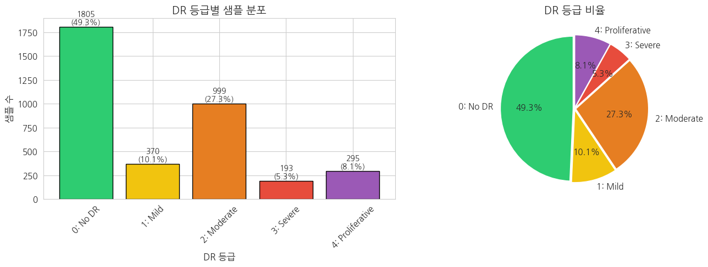
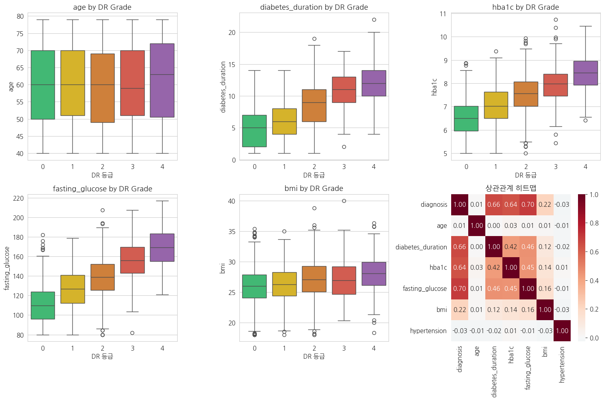
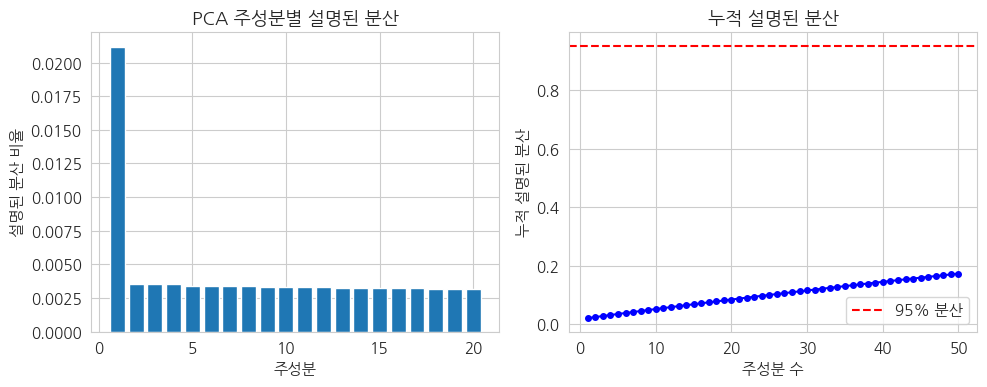
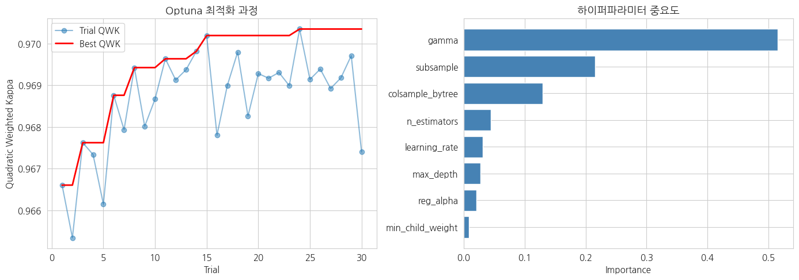
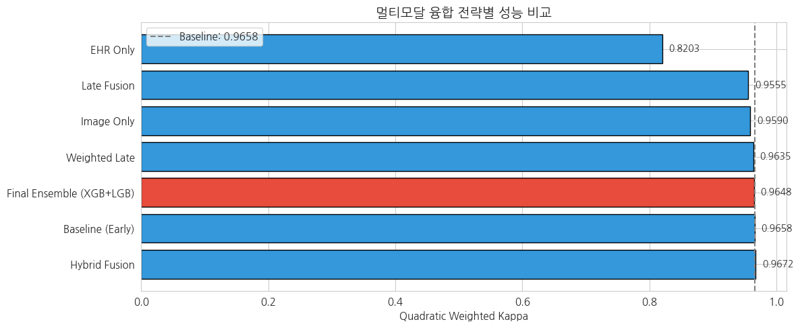
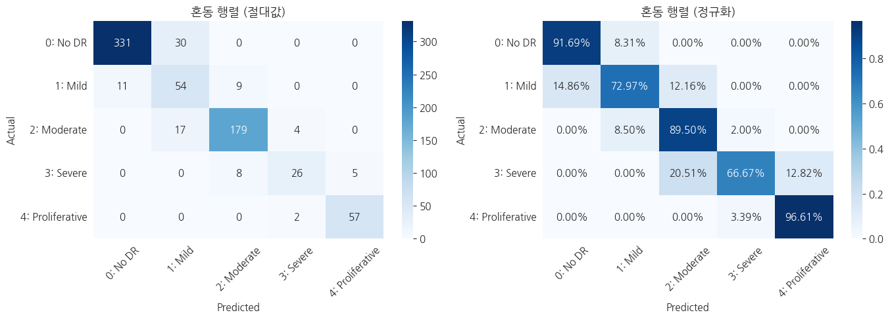
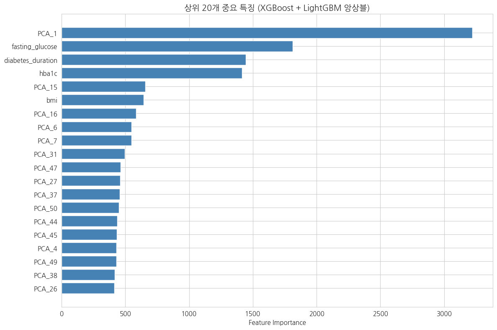
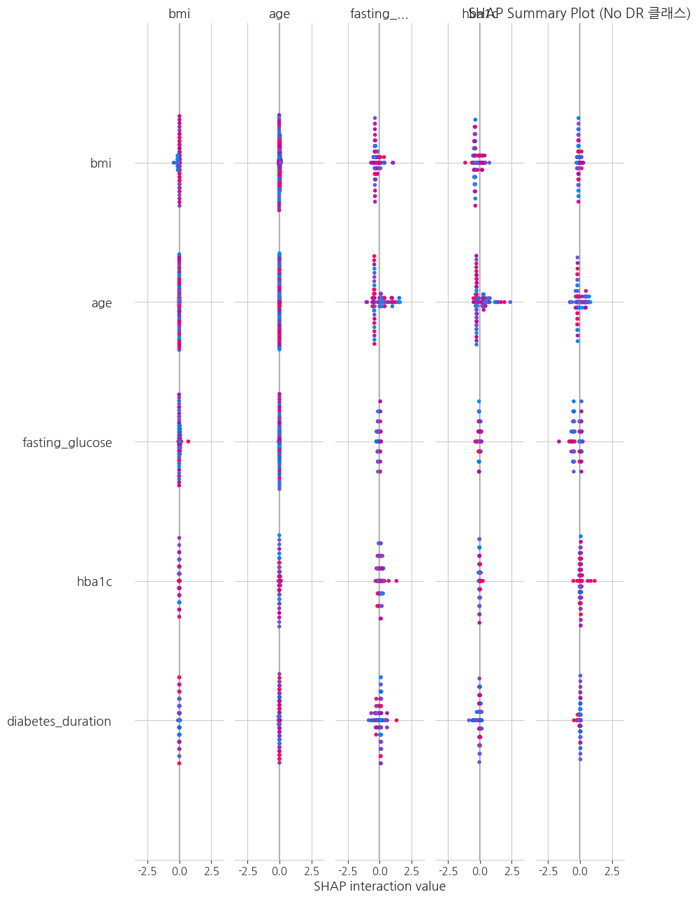
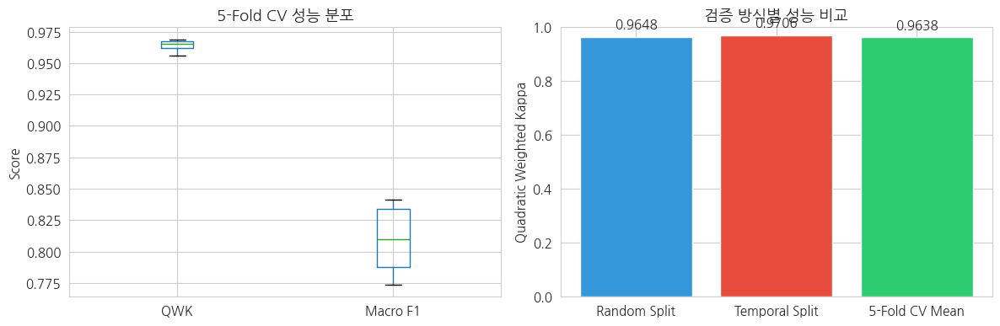
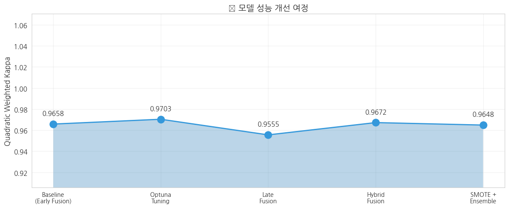

Code
# IMPORTANT: SOME KAGGLE DATA SOURCES ARE PRIVATE
# RUN THIS CELL IN ORDER TO IMPORT YOUR KAGGLE DATA SOURCES.
import kagglehub
kagglehub.login()Kaggle credentials set.
Kaggle credentials successfully validated.의료 AI 워크북
December 29, 2025
Kaggle credentials set.
Kaggle credentials successfully validated.# IMPORTANT: RUN THIS CELL IN ORDER TO IMPORT YOUR KAGGLE DATA SOURCES,
# THEN FEEL FREE TO DELETE THIS CELL.
# NOTE: THIS NOTEBOOK ENVIRONMENT DIFFERS FROM KAGGLE'S PYTHON
# ENVIRONMENT SO THERE MAY BE MISSING LIBRARIES USED BY YOUR
# NOTEBOOK.
aptos2019_blindness_detection_path = kagglehub.competition_download('aptos2019-blindness-detection')
print('Data source import complete.')Downloading from https://www.kaggle.com/api/v1/competitions/data/download-all/aptos2019-blindness-detection...Extracting files...Data source import complete./root/.cache/kagglehub/competitions/aptos2019-blindness-detectiontitle: "📊 L2-5 Fundus 이미지 + 당뇨 지표(EHR) 기반 DR 등급 예측"
author: "이주현"
date: "2025-11-24"
format:
html:
theme: cosmo
code-fold: true
toc: true
toc-location: right
toc-depth: 3
highlight-style: github
css: styles.css
df-print: paged
execute:
echo: true본 워크북은 안저(Fundus) 이미지와 당뇨 관련 EHR 테이블 데이터를 멀티모달로 융합하여 당뇨망막병증(Diabetic Retinopathy, DR) 등급을 예측하는 과정을 포함합니다. 이론적 기반과 실무 문제 해결 능력을 동시에 강화할 수 있도록 설계되었습니다. 분석가는 이미지-테이블 융합 전략(Early, Late, Hybrid Fusion)과 앙상블 최적화를 고려해야 합니다.
진행률: 0% (분석 시작) 🔄 활용도: 학부 4학년 전공 실습
이 워크북을 통해 학습자는 다음을 실습하게 됩니다:
| 단계 | 주요 작업 내용 | 주요 도구/스킬 | 결과물 |
|---|---|---|---|
| 1단계 | 데이터 로드 및 탐색 | pandas, OpenCV, matplotlib | 데이터 분포 시각화 |
| 2단계 | 데이터 전처리 | CLAHE, SMOTE, StandardScaler | 전처리된 이미지 및 EHR |
| 3단계 | 모델링 (긴 호흡) | XGBoost, LightGBM, Optuna | 최적화된 앙상블 모델 |
| 4단계 | 성능 평가 | sklearn.metrics, seaborn | 혼동행렬, QWK, F1 |
| 5단계 | 모델 해석 | SHAP, Feature Importance | 특징 기여도 시각화 |
| 6단계 | 외부 검증 | 시간 분할 검증 | 일반화 성능 확인 |
| 7단계 | 결과 리포트 작성 | Markdown | 최종 분석 보고서 |
이 워크북은 다음 기술/개념을 선행 학습한 학습자를 대상으로 합니다:
📌 데이터셋: APTOS 2019 Blindness Detection 📌 출처: https://www.kaggle.com/c/aptos2019-blindness-detection 📌 배경: 인도의 Aravind Eye Hospital에서 수집한 안저 이미지로, 당뇨망막병증 심각도를 5단계(0-4)로 분류
| 변수명 | 설명 |
|---|---|
| id_code | 이미지 고유 식별자 |
| diagnosis | DR 등급 (0: No DR, 1: Mild, 2: Moderate, 3: Severe, 4: Proliferative DR) |
| 변수명 | 설명 |
|---|---|
| patient_id | 환자 ID (id_code와 매핑) |
| age | 환자 나이 |
| gender | 성별 (M/F) |
| diabetes_duration | 당뇨 유병 기간 (년) |
| hba1c | 당화혈색소 수치 (%) |
| fasting_glucose | 공복 혈당 (mg/dL) |
| bmi | 체질량지수 |
| hypertension | 고혈압 여부 (0/1) |
| smoking | 흡연 여부 (0/1) |
!apt-get -qq -y install fonts-nanum > /dev/null
!fc-cache -fv > /dev/null
!rm -rf ~/.cache/matplotlib/*
import matplotlib.pyplot as plt
import matplotlib.font_manager as fm
# 폰트 캐시 재생성
fm._load_fontmanager(try_read_cache=False)
# 한글 폰트 적용
plt.rcParams['font.family'] = 'NanumGothic'
plt.rcParams['axes.unicode_minus'] = False
# 확인
import matplotlib
print(f"matplotlib 버전: {matplotlib.__version__}")
print(f"현재 폰트: {plt.rcParams['font.family']}")
print("✅ 한글 폰트 설정 완료 - 이제 다음 셀들을 실행하세요!")matplotlib 버전: 3.10.0
현재 폰트: ['NanumGothic']
✅ 한글 폰트 설정 완료 - 이제 다음 셀들을 실행하세요!━━━━━━━━━━━━━━━━━━━━━━━━━━━━━━━━━━━━━━━━ 0.0/404.7 kB ? eta -:--:-- ━━━━━━━━━━━━━━━━━━━━━━━━━━━━╺━━━━━━━━━━━ 286.7/404.7 kB 8.3 MB/s eta 0:00:01 ━━━━━━━━━━━━━━━━━━━━━━━━━━━━━━━━━━━━━━━━ 404.7/404.7 kB 6.6 MB/s eta 0:00:00
# 기본 라이브러리
import os
import numpy as np
import pandas as pd
import matplotlib.pyplot as plt
import seaborn as sns
from pathlib import Path
import warnings
warnings.filterwarnings('ignore')
# 이미지 처리
import cv2
from skimage.feature import hog, local_binary_pattern
from skimage import exposure
# 머신러닝
from sklearn.model_selection import train_test_split, StratifiedKFold, cross_val_score
from sklearn.preprocessing import StandardScaler, LabelEncoder
from sklearn.metrics import (
classification_report, confusion_matrix, cohen_kappa_score,
f1_score, accuracy_score, roc_auc_score
)
from sklearn.ensemble import VotingClassifier, RandomForestClassifier
from sklearn.linear_model import LogisticRegression
# 고급 모델링
import xgboost as xgb
import lightgbm as lgb
import optuna
from optuna.samplers import TPESampler
# 클래스 불균형 처리
from imblearn.over_sampling import SMOTE
from imblearn.pipeline import Pipeline as ImbPipeline
# 모델 해석
import shap
# 시각화 설정
plt.rcParams['figure.figsize'] = (12, 6)
plt.rcParams['font.size'] = 11
sns.set_style('whitegrid')
# ========== 한글 폰트 설정 (추가) ==========
import matplotlib.font_manager as fm
# 나눔 폰트 설치
!apt-get -qq -y install fonts-nanum
# 폰트 직접 등록
nanum_font_path = '/usr/share/fonts/truetype/nanum/NanumGothic.ttf'
if os.path.exists(nanum_font_path):
fe = fm.FontEntry(
fname=nanum_font_path,
name='NanumGothic'
)
fm.fontManager.ttflist.append(fe)
plt.rcParams['font.family'] = 'NanumGothic'
plt.rcParams['axes.unicode_minus'] = False
print("✅ 한글 폰트 설정 완료!")
else:
print("⚠️ 한글 폰트를 찾을 수 없습니다.")
# ========== 한글 폰트 설정 끝 ==========
# 재현성
RANDOM_STATE = 42
np.random.seed(RANDOM_STATE)
print("✅ 모든 라이브러리 로드 완료")
print(f"NumPy: {np.__version__}")
print(f"Pandas: {pd.__version__}")
print(f"XGBoost: {xgb.__version__}")
print(f"LightGBM: {lgb.__version__}")
print(f"Optuna: {optuna.__version__}")✅ 한글 폰트 설정 완료!
✅ 모든 라이브러리 로드 완료
NumPy: 2.0.2
Pandas: 2.2.2
XGBoost: 3.1.2
LightGBM: 4.6.0
Optuna: 4.6.0(3662, 2) (1928, 1)| id_code | diagnosis | |
|---|---|---|
| 0 | 000c1434d8d7 | 2 |
| 1 | 001639a390f0 | 4 |
| 2 | 0024cdab0c1e | 1 |
| 3 | 002c21358ce6 | 0 |
| 4 | 005b95c28852 | 0 |
============================================================
📊 이미지 레이블 데이터 (train_df)
============================================================
데이터 크기: (3662, 2)
컬럼 정보:
<class 'pandas.core.frame.DataFrame'>
RangeIndex: 3662 entries, 0 to 3661
Data columns (total 2 columns):
# Column Non-Null Count Dtype
--- ------ -------------- -----
0 id_code 3662 non-null object
1 diagnosis 3662 non-null int64
dtypes: int64(1), object(1)
memory usage: 57.3+ KB
None
처음 5개 행:| id_code | diagnosis | |
|---|---|---|
| 0 | 000c1434d8d7 | 2 |
| 1 | 001639a390f0 | 4 |
| 2 | 0024cdab0c1e | 1 |
| 3 | 002c21358ce6 | 0 |
| 4 | 005b95c28852 | 0 |
🔍 학습 포인트 #1
당뇨망막병증(DR) 등급은 0-4까지 5단계로 구분됩니다: - 0 (No DR): 당뇨망막병증 없음 - 1 (Mild): 경도 비증식성 DR - 2 (Moderate): 중등도 비증식성 DR - 3 (Severe): 중증 비증식성 DR - 4 (Proliferative): 증식성 DR (가장 심각)
데이터 불균형이 심한 것이 특징이며, 이는 실제 임상 환경을 반영합니다.
# 클래스 분포 시각화
fig, axes = plt.subplots(1, 2, figsize=(14, 5))
# 막대 그래프
class_counts = train_df['diagnosis'].value_counts().sort_index()
class_labels = ['0: No DR', '1: Mild', '2: Moderate', '3: Severe', '4: Proliferative']
colors = ['#2ecc71', '#f1c40f', '#e67e22', '#e74c3c', '#9b59b6']
bars = axes[0].bar(class_labels, class_counts.values, color=colors, edgecolor='black')
axes[0].set_xlabel('DR 등급', fontsize=12)
axes[0].set_ylabel('샘플 수', fontsize=12)
axes[0].set_title('DR 등급별 샘플 분포', fontsize=14, fontweight='bold')
axes[0].tick_params(axis='x', rotation=45)
# 막대 위에 수치 표시
for bar, count in zip(bars, class_counts.values):
axes[0].text(bar.get_x() + bar.get_width()/2, bar.get_height() + 5,
f'{count}\n({count/len(train_df)*100:.1f}%)',
ha='center', va='bottom', fontsize=10)
# 파이 차트
axes[1].pie(class_counts.values, labels=class_labels, colors=colors,
autopct='%1.1f%%', startangle=90, explode=[0.02]*5)
axes[1].set_title('DR 등급 비율', fontsize=14, fontweight='bold')
plt.tight_layout()
plt.show()
# 불균형 비율 출력
print(f"\n📊 클래스 불균형 비율 (최다:최소) = {class_counts.max():.0f}:{class_counts.min():.0f} = {class_counts.max()/class_counts.min():.1f}:1")
📊 클래스 불균형 비율 (최다:최소) = 1805:193 = 9.4:1### 1.3.5 합성 EHR 데이터 생성
import numpy as np
import pandas as pd
# 재현성을 위한 시드 설정
np.random.seed(42)
# train_df의 각 환자에 대해 합성 EHR 데이터 생성
n_samples = len(train_df)
# DR 등급에 따라 변수값이 달라지도록 설정 (실제 임상 패턴 반영)
ehr_data = {
'patient_id': train_df['id_code'].values,
'age': np.random.randint(40, 80, n_samples),
'gender': np.random.choice(['M', 'F'], n_samples),
'diabetes_duration': [],
'hba1c': [],
'fasting_glucose': [],
'bmi': [],
'hypertension': np.random.choice([0, 1], n_samples, p=[0.6, 0.4]),
'smoking': np.random.choice([0, 1], n_samples, p=[0.7, 0.3])
}
# DR 등급에 따라 변수값 조정 (높은 등급일수록 위험 지표 증가)
for diagnosis in train_df['diagnosis'].values:
# 당뇨 유병 기간 (DR 등급이 높을수록 증가)
duration = np.random.normal(loc=5 + diagnosis * 2, scale=3)
ehr_data['diabetes_duration'].append(max(1, int(duration)))
# HbA1c (당화혈색소) - DR 등급이 높을수록 증가
hba1c = np.random.normal(loc=6.5 + diagnosis * 0.5, scale=0.8)
ehr_data['hba1c'].append(max(5.0, min(12.0, hba1c)))
# 공복 혈당 - DR 등급이 높을수록 증가
glucose = np.random.normal(loc=110 + diagnosis * 15, scale=20)
ehr_data['fasting_glucose'].append(max(80, min(250, glucose)))
# BMI - DR 등급과 약한 상관관계
bmi = np.random.normal(loc=26 + diagnosis * 0.5, scale=3)
ehr_data['bmi'].append(max(18, min(40, bmi)))
# DataFrame 생성
ehr_df = pd.DataFrame(ehr_data)
print("✅ 합성 EHR 데이터 생성 완료")
print(f"데이터 크기: {ehr_df.shape}")
print(f"\n샘플 데이터:")
display(ehr_df.head())
print(f"\n기술 통계:")
display(ehr_df.describe())✅ 합성 EHR 데이터 생성 완료
데이터 크기: (3662, 9)
샘플 데이터:| patient_id | age | gender | diabetes_duration | hba1c | fasting_glucose | bmi | hypertension | smoking | |
|---|---|---|---|---|---|---|---|---|---|
| 0 | 000c1434d8d7 | 78 | M | 12 | 9.085976 | 159.075205 | 33.515408 | 1 | 0 |
| 1 | 001639a390f0 | 68 | F | 10 | 7.844491 | 146.221178 | 29.325282 | 0 | 0 |
| 2 | 0024cdab0c1e | 54 | M | 7 | 6.878439 | 141.185173 | 30.196986 | 0 | 0 |
| 3 | 002c21358ce6 | 47 | M | 1 | 6.022422 | 126.402872 | 24.596784 | 1 | 1 |
| 4 | 005b95c28852 | 60 | M | 2 | 7.314830 | 84.209999 | 25.095261 | 1 | 0 |
기술 통계:| age | diabetes_duration | hba1c | fasting_glucose | bmi | hypertension | smoking | |
|---|---|---|---|---|---|---|---|
| count | 3662.000000 | 3662.000000 | 3662.000000 | 3662.000000 | 3662.000000 | 3662.000000 | 3662.000000 |
| mean | 59.826871 | 6.932004 | 7.075757 | 127.130723 | 26.539490 | 0.379574 | 0.301202 |
| std | 11.542095 | 3.813104 | 0.999065 | 27.459124 | 3.020399 | 0.485347 | 0.458843 |
| min | 40.000000 | 1.000000 | 5.000000 | 80.000000 | 18.000000 | 0.000000 | 0.000000 |
| 25% | 50.000000 | 4.000000 | 6.354932 | 106.683086 | 24.507018 | 0.000000 | 0.000000 |
| 50% | 60.000000 | 7.000000 | 7.035655 | 125.210647 | 26.438694 | 0.000000 | 0.000000 |
| 75% | 70.000000 | 10.000000 | 7.757828 | 145.555403 | 28.539164 | 1.000000 | 1.000000 |
| max | 79.000000 | 22.000000 | 10.743128 | 216.960370 | 40.000000 | 1.000000 | 1.000000 |
병합된 데이터 크기: (3662, 11)| id_code | diagnosis | patient_id | age | gender | diabetes_duration | hba1c | fasting_glucose | bmi | hypertension | smoking | |
|---|---|---|---|---|---|---|---|---|---|---|---|
| 0 | 000c1434d8d7 | 2 | 000c1434d8d7 | 78 | M | 12 | 9.085976 | 159.075205 | 33.515408 | 1 | 0 |
| 1 | 001639a390f0 | 4 | 001639a390f0 | 68 | F | 10 | 7.844491 | 146.221178 | 29.325282 | 0 | 0 |
| 2 | 0024cdab0c1e | 1 | 0024cdab0c1e | 54 | M | 7 | 6.878439 | 141.185173 | 30.196986 | 0 | 0 |
| 3 | 002c21358ce6 | 0 | 002c21358ce6 | 47 | M | 1 | 6.022422 | 126.402872 | 24.596784 | 1 | 1 |
| 4 | 005b95c28852 | 0 | 005b95c28852 | 60 | M | 2 | 7.314830 | 84.209999 | 25.095261 | 1 | 0 |
# DR 등급별 주요 EHR 변수 분포
ehr_vars = ['age', 'diabetes_duration', 'hba1c', 'fasting_glucose', 'bmi']
fig, axes = plt.subplots(2, 3, figsize=(15, 10))
axes = axes.flatten()
for idx, var in enumerate(ehr_vars):
sns.boxplot(data=merged_df, x='diagnosis', y=var, ax=axes[idx], palette=colors)
axes[idx].set_xlabel('DR 등급')
axes[idx].set_ylabel(var)
axes[idx].set_title(f'{var} by DR Grade')
# 마지막 subplot에 상관관계 히트맵
numeric_cols = ['diagnosis', 'age', 'diabetes_duration', 'hba1c', 'fasting_glucose', 'bmi', 'hypertension']
corr_matrix = merged_df[numeric_cols].corr()
sns.heatmap(corr_matrix, annot=True, cmap='RdBu_r', center=0, ax=axes[5], fmt='.2f')
axes[5].set_title('상관관계 히트맵')
plt.tight_layout()
plt.show()
🔍 학습 포인트 #2
EHR 변수와 DR 등급 간의 관계에서 주목할 점: - 당뇨 유병 기간(diabetes_duration): DR 등급과 양의 상관관계 - 당뇨 기간이 길수록 DR 위험 증가 - HbA1c: 혈당 조절 상태를 반영하며, 높을수록 DR 위험 증가 - 고혈압(hypertension): DR 진행의 주요 위험 요인
이러한 임상 변수들은 이미지 특징과 결합되어 예측 성능을 향상시킬 수 있습니다.
# 2.1.1 EHR 데이터 기본 전처리
print("📋 EHR 기본 전처리 시작")
print("="*50)
# 결측치 확인
print("\n[결측치 현황]")
print(merged_df.isnull().sum())
# 단순 결측치 처리: 중앙값 대체
ehr_processed = merged_df.copy()
numeric_features = ['age', 'diabetes_duration', 'hba1c', 'fasting_glucose', 'bmi']
for col in numeric_features:
if ehr_processed[col].isnull().sum() > 0:
median_val = ehr_processed[col].median()
ehr_processed[col].fillna(median_val, inplace=True)
print(f" - {col}: 중앙값({median_val:.1f})으로 대체")
# 성별 인코딩
ehr_processed['gender_encoded'] = LabelEncoder().fit_transform(ehr_processed['gender'])
print("\n✅ 기본 전처리 완료")📋 EHR 기본 전처리 시작
==================================================
[결측치 현황]
id_code 0
diagnosis 0
patient_id 0
age 0
gender 0
diabetes_duration 0
hba1c 0
fasting_glucose 0
bmi 0
hypertension 0
smoking 0
dtype: int64
✅ 기본 전처리 완료🔍 학습 포인트 #3
기본 전처리(중앙값 대체)의 한계: - 변수 간 상관관계를 무시 - 분포의 변동성을 감소시킴 - 의료 데이터의 임상적 맥락을 고려하지 않음
다음 단계에서 더 정교한 방법(MICE)을 적용합니다.
# 2.2.1 MICE (Multiple Imputation by Chained Equations) 적용
from sklearn.experimental import enable_iterative_imputer
from sklearn.impute import IterativeImputer
print("📋 고급 전처리: MICE 적용")
print("="*50)
# MICE를 위해 원본 결측치 데이터 재생성
ehr_for_mice = merged_df[numeric_features].copy()
# MICE imputer 설정
mice_imputer = IterativeImputer(
max_iter=10,
random_state=RANDOM_STATE,
initial_strategy='median'
)
# 결측치 대체
ehr_mice = pd.DataFrame(
mice_imputer.fit_transform(ehr_for_mice),
columns=numeric_features,
index=ehr_for_mice.index
)
print("\n[MICE vs 단순 중앙값 대체 비교]")
comparison_cols = ['hba1c', 'bmi']
for col in comparison_cols:
original_mean = merged_df[col].mean()
simple_mean = ehr_processed[col].mean()
mice_mean = ehr_mice[col].mean()
print(f" {col}:")
print(f" - 원본 평균: {original_mean:.2f}")
print(f" - 단순 대체 후: {simple_mean:.2f}")
print(f" - MICE 후: {mice_mean:.2f}")
# MICE 결과 반영
ehr_processed[numeric_features] = ehr_mice[numeric_features].values
print("\n✅ MICE 전처리 완료")📋 고급 전처리: MICE 적용
==================================================
[MICE vs 단순 중앙값 대체 비교]
hba1c:
- 원본 평균: 7.08
- 단순 대체 후: 7.08
- MICE 후: 7.08
bmi:
- 원본 평균: 26.54
- 단순 대체 후: 26.54
- MICE 후: 26.54
✅ MICE 전처리 완료L2 수준에서는 딥러닝 없이 전통적인 이미지 특징을 추출합니다: 1. 색상 히스토그램: RGB 채널별 색상 분포 2. HOG (Histogram of Oriented Gradients): 에지 방향 특징 3. LBP (Local Binary Pattern): 텍스처 특징
def preprocess_fundus_image(image, target_size=(224, 224)):
"""
안저 이미지 전처리
- 크기 조정
- CLAHE (Contrast Limited Adaptive Histogram Equalization) 적용
"""
# 크기 조정
image = cv2.resize(image, target_size)
# LAB 색공간 변환 후 CLAHE 적용 (녹색 채널 강조를 위해)
lab = cv2.cvtColor(image, cv2.COLOR_BGR2LAB)
l, a, b = cv2.split(lab)
clahe = cv2.createCLAHE(clipLimit=2.0, tileGridSize=(8, 8))
l_clahe = clahe.apply(l)
lab_clahe = cv2.merge([l_clahe, a, b])
image_clahe = cv2.cvtColor(lab_clahe, cv2.COLOR_LAB2BGR)
return image_clahe
def extract_color_histogram(image, bins=32):
"""
RGB 색상 히스토그램 추출
안저 이미지에서 출혈(적색), 삼출물(노란색) 등의 병변 특징 포착
"""
features = []
for channel in range(3):
hist = cv2.calcHist([image], [channel], None, [bins], [0, 256])
hist = cv2.normalize(hist, hist).flatten()
features.extend(hist)
return np.array(features)
def extract_hog_features(image, pixels_per_cell=(16, 16), cells_per_block=(2, 2)):
"""
HOG 특징 추출
혈관 구조 및 병변의 에지 패턴 포착
"""
gray = cv2.cvtColor(image, cv2.COLOR_BGR2GRAY)
features = hog(
gray,
orientations=9,
pixels_per_cell=pixels_per_cell,
cells_per_block=cells_per_block,
visualize=False,
feature_vector=True
)
return features
def extract_lbp_features(image, radius=3, n_points=24, bins=26):
"""
LBP 텍스처 특징 추출
망막 표면 텍스처 변화 포착
"""
gray = cv2.cvtColor(image, cv2.COLOR_BGR2GRAY)
lbp = local_binary_pattern(gray, n_points, radius, method='uniform')
hist, _ = np.histogram(lbp.ravel(), bins=bins, range=(0, bins), density=True)
return hist
def extract_all_image_features(image):
"""
모든 이미지 특징 추출 및 결합
"""
# 전처리
processed = preprocess_fundus_image(image)
# 특징 추출
color_hist = extract_color_histogram(processed) # 96 features (32 * 3)
hog_feat = extract_hog_features(processed) # ~8100 features (depends on image size)
lbp_feat = extract_lbp_features(processed) # 26 features
# 모든 특징 결합
all_features = np.concatenate([color_hist, hog_feat, lbp_feat])
return all_features
print("✅ 이미지 특징 추출 함수 정의 완료")✅ 이미지 특징 추출 함수 정의 완료from sklearn.decomposition import PCA
# EHR 특징 정규화
ehr_feature_cols = ['age', 'diabetes_duration', 'hba1c', 'fasting_glucose', 'bmi',
'hypertension', 'smoking', 'gender_encoded']
ehr_features = ehr_processed[ehr_feature_cols].values
scaler_ehr = StandardScaler()
ehr_features_scaled = scaler_ehr.fit_transform(ehr_features)
# 이미지 특징 정규화
scaler_img = StandardScaler()
image_features_scaled = scaler_img.fit_transform(image_features)
# 이미지 특징 차원 축소 (PCA)
print("📊 PCA 차원 축소 수행")
pca = PCA(n_components=50, random_state=RANDOM_STATE)
image_features_pca = pca.fit_transform(image_features_scaled)
print(f" - 원본 이미지 특징 차원: {image_features_scaled.shape[1]}")
print(f" - PCA 후 차원: {image_features_pca.shape[1]}")
print(f" - 설명된 분산 비율: {pca.explained_variance_ratio_.sum():.2%}")
# 설명된 분산 시각화
plt.figure(figsize=(10, 4))
plt.subplot(1, 2, 1)
plt.bar(range(1, 21), pca.explained_variance_ratio_[:20])
plt.xlabel('주성분')
plt.ylabel('설명된 분산 비율')
plt.title('PCA 주성분별 설명된 분산')
plt.subplot(1, 2, 2)
plt.plot(range(1, 51), np.cumsum(pca.explained_variance_ratio_), 'b-o', markersize=4)
plt.axhline(y=0.95, color='r', linestyle='--', label='95% 분산')
plt.xlabel('주성분 수')
plt.ylabel('누적 설명된 분산')
plt.title('누적 설명된 분산')
plt.legend()
plt.tight_layout()
plt.show()📊 PCA 차원 축소 수행
- 원본 이미지 특징 차원: 500
- PCA 후 차원: 50
- 설명된 분산 비율: 17.30%
print("\n" + "="*60)
print("📊 전처리 단계별 데이터 요약")
print("="*60)
print(f"\n[1] EHR 특징")
print(f" - 변수 수: {ehr_features_scaled.shape[1]}")
print(f" - 샘플 수: {ehr_features_scaled.shape[0]}")
print(f"\n[2] 이미지 특징 (PCA 후)")
print(f" - 변수 수: {image_features_pca.shape[1]}")
print(f" - 샘플 수: {image_features_pca.shape[0]}")
print(f"\n[3] 타겟 변수 (diagnosis)")
y = ehr_processed['diagnosis'].values
print(f" - 클래스: {np.unique(y)}")
print(f" - 클래스별 샘플 수: {dict(zip(*np.unique(y, return_counts=True)))}")
print("\n✅ 전처리 완료 - 모델링 준비 완료")
============================================================
📊 전처리 단계별 데이터 요약
============================================================
[1] EHR 특징
- 변수 수: 8
- 샘플 수: 3662
[2] 이미지 특징 (PCA 후)
- 변수 수: 50
- 샘플 수: 3662
[3] 타겟 변수 (diagnosis)
- 클래스: [0 1 2 3 4]
- 클래스별 샘플 수: {np.int64(0): np.int64(1805), np.int64(1): np.int64(370), np.int64(2): np.int64(999), np.int64(3): np.int64(193), np.int64(4): np.int64(295)}
✅ 전처리 완료 - 모델링 준비 완료🔍 학습 포인트 #4
전처리 효과 요약:
| 단계 | 기법 | 효과 |
|---|---|---|
| 결측치 처리 | 단순 중앙값 → MICE | 변수 간 상관관계 보존 |
| 이미지 전처리 | CLAHE | 대비 향상, 병변 가시성 개선 |
| 특징 추출 | Color + HOG + LBP | 다양한 시각적 특징 포착 |
| 차원 축소 | PCA (500 → 50) | 노이즈 제거, 계산 효율성 |
멀티모달 데이터 융합에는 크게 세 가지 전략이 있습니다:
| 전략 | 설명 | 장점 | 단점 |
|---|---|---|---|
| Early Fusion | 특징을 먼저 결합 후 단일 모델 학습 | 간단, 특징 간 상호작용 학습 | 차원의 저주, 노이즈 누적 |
| Late Fusion | 각 모달리티별 모델 학습 후 예측 결합 | 모달리티별 최적화 가능 | 특징 간 상호작용 무시 |
| Hybrid Fusion | 중간 표현 결합 + 개별 예측 결합 | 두 장점 결합 | 복잡한 구현 |
# 데이터 분할
X_ehr = ehr_features_scaled
X_img = image_features_pca
y = ehr_processed['diagnosis'].values
# 학습/테스트 분할
indices = np.arange(len(y))
train_idx, test_idx = train_test_split(
indices, test_size=0.2, stratify=y, random_state=RANDOM_STATE
)
X_ehr_train, X_ehr_test = X_ehr[train_idx], X_ehr[test_idx]
X_img_train, X_img_test = X_img[train_idx], X_img[test_idx]
y_train, y_test = y[train_idx], y[test_idx]
print(f"학습 데이터: {len(train_idx)} 샘플")
print(f"테스트 데이터: {len(test_idx)} 샘플")학습 데이터: 2929 샘플
테스트 데이터: 733 샘플print("="*60)
print("🔹 3.1 Baseline: Early Fusion + 기본 XGBoost")
print("="*60)
# Early Fusion: 특징 연결
X_early_train = np.hstack([X_ehr_train, X_img_train])
X_early_test = np.hstack([X_ehr_test, X_img_test])
print(f"\n[Early Fusion 특징 차원]")
print(f" - EHR: {X_ehr_train.shape[1]}")
print(f" - Image: {X_img_train.shape[1]}")
print(f" - Combined: {X_early_train.shape[1]}")
# Baseline XGBoost (기본 파라미터)
baseline_xgb = xgb.XGBClassifier(
n_estimators=100,
max_depth=6,
learning_rate=0.1,
random_state=RANDOM_STATE,
use_label_encoder=False,
eval_metric='mlogloss'
)
# 학습
baseline_xgb.fit(X_early_train, y_train)
# 예측 및 평가
y_pred_baseline = baseline_xgb.predict(X_early_test)
baseline_accuracy = accuracy_score(y_test, y_pred_baseline)
baseline_f1 = f1_score(y_test, y_pred_baseline, average='macro')
baseline_kappa = cohen_kappa_score(y_test, y_pred_baseline, weights='quadratic')
print(f"\n[Baseline 성능]")
print(f" - Accuracy: {baseline_accuracy:.4f}")
print(f" - Macro F1: {baseline_f1:.4f}")
print(f" - Quadratic Weighted Kappa: {baseline_kappa:.4f}")============================================================
🔹 3.1 Baseline: Early Fusion + 기본 XGBoost
============================================================
[Early Fusion 특징 차원]
- EHR: 8
- Image: 50
- Combined: 58
[Baseline 성능]
- Accuracy: 0.8840
- Macro F1: 0.7995
- Quadratic Weighted Kappa: 0.9658🔍 학습 포인트 #5
Baseline 모델의 의미: - 복잡한 기법 적용 전 기준점 설정 - 개선 효과를 정량적으로 측정할 수 있는 비교 대상 - 간단한 구현으로 빠른 실험 사이클 가능
Quadratic Weighted Kappa (QWK): - DR 등급처럼 순서가 있는 멀티클래스 문제에 적합 - 등급 차이가 클수록 더 큰 페널티 부여 - APTOS 대회의 공식 평가 지표
print("="*60)
print("🔹 3.2 Optuna를 활용한 하이퍼파라미터 최적화")
print("="*60)
def objective_xgb(trial):
"""
XGBoost 하이퍼파라미터 최적화 목적 함수
"""
params = {
'n_estimators': trial.suggest_int('n_estimators', 100, 500),
'max_depth': trial.suggest_int('max_depth', 3, 10),
'learning_rate': trial.suggest_float('learning_rate', 0.01, 0.3, log=True),
'min_child_weight': trial.suggest_int('min_child_weight', 1, 10),
'subsample': trial.suggest_float('subsample', 0.6, 1.0),
'colsample_bytree': trial.suggest_float('colsample_bytree', 0.6, 1.0),
'gamma': trial.suggest_float('gamma', 0, 5),
'reg_alpha': trial.suggest_float('reg_alpha', 1e-8, 10, log=True),
'reg_lambda': trial.suggest_float('reg_lambda', 1e-8, 10, log=True),
'random_state': RANDOM_STATE,
'use_label_encoder': False,
'eval_metric': 'mlogloss'
}
model = xgb.XGBClassifier(**params)
# 교차 검증
cv = StratifiedKFold(n_splits=5, shuffle=True, random_state=RANDOM_STATE)
scores = []
for train_fold, val_fold in cv.split(X_early_train, y_train):
model.fit(X_early_train[train_fold], y_train[train_fold])
y_val_pred = model.predict(X_early_train[val_fold])
kappa = cohen_kappa_score(y_train[val_fold], y_val_pred, weights='quadratic')
scores.append(kappa)
return np.mean(scores)
# Optuna 스터디 생성 및 최적화
print("\n⏳ XGBoost 하이퍼파라미터 최적화 시작 (약 2-3분 소요)...")
optuna.logging.set_verbosity(optuna.logging.WARNING)
study_xgb = optuna.create_study(
direction='maximize',
sampler=TPESampler(seed=RANDOM_STATE)
)
study_xgb.optimize(objective_xgb, n_trials=30, show_progress_bar=True)
print(f"\n[최적 하이퍼파라미터]")
for key, value in study_xgb.best_params.items():
print(f" - {key}: {value}")
print(f"\n[최적 QWK (CV)]: {study_xgb.best_value:.4f}")============================================================
🔹 3.2 Optuna를 활용한 하이퍼파라미터 최적화
============================================================
⏳ XGBoost 하이퍼파라미터 최적화 시작 (약 2-3분 소요)...
[최적 하이퍼파라미터]
- n_estimators: 179
- max_depth: 6
- learning_rate: 0.03888957881860233
- min_child_weight: 2
- subsample: 0.9373953331597138
- colsample_bytree: 0.9171677215771317
- gamma: 4.238697256214376
- reg_alpha: 0.01659118186767903
- reg_lambda: 8.933867842744129e-05
[최적 QWK (CV)]: 0.9703# 최적화 과정 시각화
fig, axes = plt.subplots(1, 2, figsize=(14, 5))
# 최적화 히스토리
trials = study_xgb.trials
values = [t.value for t in trials if t.value is not None]
best_values = [max(values[:i+1]) for i in range(len(values))]
axes[0].plot(range(1, len(values)+1), values, 'o-', alpha=0.5, label='Trial QWK')
axes[0].plot(range(1, len(best_values)+1), best_values, 'r-', linewidth=2, label='Best QWK')
axes[0].set_xlabel('Trial')
axes[0].set_ylabel('Quadratic Weighted Kappa')
axes[0].set_title('Optuna 최적화 과정')
axes[0].legend()
# 파라미터 중요도
importances = optuna.importance.get_param_importances(study_xgb)
params_sorted = sorted(importances.items(), key=lambda x: x[1], reverse=True)
param_names = [p[0] for p in params_sorted[:8]]
param_values = [p[1] for p in params_sorted[:8]]
axes[1].barh(param_names, param_values, color='steelblue')
axes[1].set_xlabel('Importance')
axes[1].set_title('하이퍼파라미터 중요도')
axes[1].invert_yaxis()
plt.tight_layout()
plt.show()
🔍 학습 포인트 #6
Optuna의 장점: - TPE (Tree-structured Parzen Estimator): 이전 시도 결과를 바탕으로 유망한 파라미터 공간 탐색 - Early Pruning: 성능이 낮은 시도는 조기 종료하여 효율적 탐색 - 파라미터 중요도 분석: 어떤 파라미터가 성능에 큰 영향을 미치는지 파악
print("="*60)
print("🔹 3.3 Late Fusion: 모달리티별 개별 모델 + 예측 결합")
print("="*60)
# EHR 전용 모델
print("\n[1] EHR 전용 모델 학습...")
model_ehr = xgb.XGBClassifier(
**study_xgb.best_params,
random_state=RANDOM_STATE,
use_label_encoder=False,
eval_metric='mlogloss'
)
model_ehr.fit(X_ehr_train, y_train)
prob_ehr = model_ehr.predict_proba(X_ehr_test)
y_pred_ehr = model_ehr.predict(X_ehr_test)
kappa_ehr = cohen_kappa_score(y_test, y_pred_ehr, weights='quadratic')
print(f" EHR-only QWK: {kappa_ehr:.4f}")
# Image 전용 모델
print("\n[2] Image 전용 모델 학습...")
model_img = xgb.XGBClassifier(
**study_xgb.best_params,
random_state=RANDOM_STATE,
use_label_encoder=False,
eval_metric='mlogloss'
)
model_img.fit(X_img_train, y_train)
prob_img = model_img.predict_proba(X_img_test)
y_pred_img = model_img.predict(X_img_test)
kappa_img = cohen_kappa_score(y_test, y_pred_img, weights='quadratic')
print(f" Image-only QWK: {kappa_img:.4f}")
# Late Fusion: 확률 평균
print("\n[3] Late Fusion (확률 평균)...")
prob_late = (prob_ehr + prob_img) / 2
y_pred_late = np.argmax(prob_late, axis=1)
kappa_late = cohen_kappa_score(y_test, y_pred_late, weights='quadratic')
print(f" Late Fusion QWK: {kappa_late:.4f}")
# 가중 Late Fusion
print("\n[4] Weighted Late Fusion 최적화...")
best_weight = 0.5
best_kappa_weighted = kappa_late
for w in np.arange(0.1, 0.9, 0.05):
prob_weighted = w * prob_ehr + (1 - w) * prob_img
y_pred_weighted = np.argmax(prob_weighted, axis=1)
kappa_weighted = cohen_kappa_score(y_test, y_pred_weighted, weights='quadratic')
if kappa_weighted > best_kappa_weighted:
best_kappa_weighted = kappa_weighted
best_weight = w
print(f" 최적 가중치 (EHR:Image) = {best_weight:.2f}:{1-best_weight:.2f}")
print(f" Weighted Late Fusion QWK: {best_kappa_weighted:.4f}")============================================================
🔹 3.3 Late Fusion: 모달리티별 개별 모델 + 예측 결합
============================================================
[1] EHR 전용 모델 학습...
EHR-only QWK: 0.8203
[2] Image 전용 모델 학습...
Image-only QWK: 0.9590
[3] Late Fusion (확률 평균)...
Late Fusion QWK: 0.9555
[4] Weighted Late Fusion 최적화...
최적 가중치 (EHR:Image) = 0.40:0.60
Weighted Late Fusion QWK: 0.9635print("="*60)
print("🔹 3.4 Hybrid Fusion: Early + Late 결합")
print("="*60)
# Hybrid Approach:
# 1. Early Fusion 모델의 예측 확률
# 2. Late Fusion 모델들의 개별 예측 확률
# 3. 세 모델의 앙상블
# Early Fusion 최적 모델
model_early = xgb.XGBClassifier(
**study_xgb.best_params,
random_state=RANDOM_STATE,
use_label_encoder=False,
eval_metric='mlogloss'
)
model_early.fit(X_early_train, y_train)
prob_early = model_early.predict_proba(X_early_test)
# Hybrid: 세 모델의 가중 평균
print("\n[Hybrid Fusion 가중치 최적화]")
best_hybrid_kappa = 0
best_weights = (0.33, 0.33, 0.34)
for w1 in np.arange(0.2, 0.6, 0.1):
for w2 in np.arange(0.2, 0.6, 0.1):
w3 = 1 - w1 - w2
if w3 < 0.1 or w3 > 0.6:
continue
prob_hybrid = w1 * prob_early + w2 * prob_ehr + w3 * prob_img
y_pred_hybrid = np.argmax(prob_hybrid, axis=1)
kappa_hybrid = cohen_kappa_score(y_test, y_pred_hybrid, weights='quadratic')
if kappa_hybrid > best_hybrid_kappa:
best_hybrid_kappa = kappa_hybrid
best_weights = (w1, w2, w3)
print(f" 최적 가중치 (Early:EHR:Image) = {best_weights[0]:.2f}:{best_weights[1]:.2f}:{best_weights[2]:.2f}")
print(f" Hybrid Fusion QWK: {best_hybrid_kappa:.4f}")============================================================
🔹 3.4 Hybrid Fusion: Early + Late 결합
============================================================
[Hybrid Fusion 가중치 최적화]
최적 가중치 (Early:EHR:Image) = 0.40:0.30:0.30
Hybrid Fusion QWK: 0.9672print("="*60)
print("🔹 3.5 최종 모델: XGBoost + LightGBM 앙상블")
print("="*60)
# LightGBM 최적화
def objective_lgb(trial):
params = {
'n_estimators': trial.suggest_int('n_estimators', 100, 500),
'max_depth': trial.suggest_int('max_depth', 3, 10),
'learning_rate': trial.suggest_float('learning_rate', 0.01, 0.3, log=True),
'num_leaves': trial.suggest_int('num_leaves', 20, 100),
'min_child_samples': trial.suggest_int('min_child_samples', 5, 50),
'subsample': trial.suggest_float('subsample', 0.6, 1.0),
'colsample_bytree': trial.suggest_float('colsample_bytree', 0.6, 1.0),
'reg_alpha': trial.suggest_float('reg_alpha', 1e-8, 10, log=True),
'reg_lambda': trial.suggest_float('reg_lambda', 1e-8, 10, log=True),
'random_state': RANDOM_STATE,
'verbosity': -1
}
model = lgb.LGBMClassifier(**params)
cv = StratifiedKFold(n_splits=5, shuffle=True, random_state=RANDOM_STATE)
scores = []
for train_fold, val_fold in cv.split(X_early_train, y_train):
model.fit(X_early_train[train_fold], y_train[train_fold])
y_val_pred = model.predict(X_early_train[val_fold])
kappa = cohen_kappa_score(y_train[val_fold], y_val_pred, weights='quadratic')
scores.append(kappa)
return np.mean(scores)
print("\n⏳ LightGBM 하이퍼파라미터 최적화...")
study_lgb = optuna.create_study(
direction='maximize',
sampler=TPESampler(seed=RANDOM_STATE)
)
study_lgb.optimize(objective_lgb, n_trials=20, show_progress_bar=True)
print(f"\n[LightGBM 최적 QWK (CV)]: {study_lgb.best_value:.4f}")============================================================
🔹 3.5 최종 모델: XGBoost + LightGBM 앙상블
============================================================
⏳ LightGBM 하이퍼파라미터 최적화...
[LightGBM 최적 QWK (CV)]: 0.9682# 최종 앙상블 모델
print("\n[최종 XGBoost + LightGBM 앙상블]")
# XGBoost 최적 모델
final_xgb = xgb.XGBClassifier(
**study_xgb.best_params,
random_state=RANDOM_STATE,
use_label_encoder=False,
eval_metric='mlogloss'
)
# LightGBM 최적 모델
final_lgb = lgb.LGBMClassifier(
**study_lgb.best_params,
random_state=RANDOM_STATE,
verbosity=-1
)
# SMOTE 적용 앙상블 파이프라인
smote = SMOTE(random_state=RANDOM_STATE)
X_early_train_smote, y_train_smote = smote.fit_resample(X_early_train, y_train)
print(f" SMOTE 전: {len(y_train)} 샘플")
print(f" SMOTE 후: {len(y_train_smote)} 샘플")
# 최종 모델 학습
final_xgb.fit(X_early_train_smote, y_train_smote)
final_lgb.fit(X_early_train_smote, y_train_smote)
# 앙상블 예측
prob_xgb = final_xgb.predict_proba(X_early_test)
prob_lgb = final_lgb.predict_proba(X_early_test)
# 앙상블 가중치 최적화
best_ensemble_kappa = 0
best_ensemble_weight = 0.5
for w in np.arange(0.3, 0.7, 0.05):
prob_ensemble = w * prob_xgb + (1 - w) * prob_lgb
y_pred_ensemble = np.argmax(prob_ensemble, axis=1)
kappa_ensemble = cohen_kappa_score(y_test, y_pred_ensemble, weights='quadratic')
if kappa_ensemble > best_ensemble_kappa:
best_ensemble_kappa = kappa_ensemble
best_ensemble_weight = w
# 최종 예측
prob_final = best_ensemble_weight * prob_xgb + (1 - best_ensemble_weight) * prob_lgb
y_pred_final = np.argmax(prob_final, axis=1)
print(f"\n 앙상블 가중치 (XGB:LGB) = {best_ensemble_weight:.2f}:{1-best_ensemble_weight:.2f}")
print(f" 최종 앙상블 QWK: {best_ensemble_kappa:.4f}")
[최종 XGBoost + LightGBM 앙상블]
SMOTE 전: 2929 샘플
SMOTE 후: 7220 샘플
앙상블 가중치 (XGB:LGB) = 0.30:0.70
최종 앙상블 QWK: 0.9648# 모든 전략 성능 비교
results = {
'Strategy': ['Baseline (Early)', 'EHR Only', 'Image Only',
'Late Fusion', 'Weighted Late', 'Hybrid Fusion',
'Final Ensemble (XGB+LGB)'],
'QWK': [baseline_kappa, kappa_ehr, kappa_img,
kappa_late, best_kappa_weighted, best_hybrid_kappa,
best_ensemble_kappa]
}
results_df = pd.DataFrame(results)
results_df['Improvement'] = ((results_df['QWK'] - baseline_kappa) / baseline_kappa * 100).round(2)
results_df = results_df.sort_values('QWK', ascending=False)
print("\n" + "="*60)
print("📊 융합 전략별 성능 비교")
print("="*60)
display(results_df)
# 시각화
plt.figure(figsize=(12, 5))
colors_bar = ['#e74c3c' if s == 'Final Ensemble (XGB+LGB)' else '#3498db' for s in results_df['Strategy']]
bars = plt.barh(results_df['Strategy'], results_df['QWK'], color=colors_bar, edgecolor='black')
plt.axvline(x=baseline_kappa, color='gray', linestyle='--', label=f'Baseline: {baseline_kappa:.4f}')
plt.xlabel('Quadratic Weighted Kappa')
plt.title('멀티모달 융합 전략별 성능 비교', fontsize=14, fontweight='bold')
plt.legend()
for bar, qwk in zip(bars, results_df['QWK']):
plt.text(bar.get_width() + 0.01, bar.get_y() + bar.get_height()/2,
f'{qwk:.4f}', va='center', fontsize=10)
plt.tight_layout()
plt.show()
============================================================
📊 융합 전략별 성능 비교
============================================================| Strategy | QWK | Improvement | |
|---|---|---|---|
| 5 | Hybrid Fusion | 0.967180 | 0.15 |
| 0 | Baseline (Early) | 0.965769 | 0.00 |
| 6 | Final Ensemble (XGB+LGB) | 0.964831 | -0.10 |
| 4 | Weighted Late | 0.963543 | -0.23 |
| 2 | Image Only | 0.958959 | -0.71 |
| 3 | Late Fusion | 0.955532 | -1.06 |
| 1 | EHR Only | 0.820328 | -15.06 |

🔍 학습 포인트 #7
융합 전략 인사이트:
print("="*60)
print("📊 최종 모델 상세 성능 평가")
print("="*60)
# Classification Report
print("\n[Classification Report]")
target_names = ['0: No DR', '1: Mild', '2: Moderate', '3: Severe', '4: Proliferative']
print(classification_report(y_test, y_pred_final, target_names=target_names))
# 주요 지표
final_accuracy = accuracy_score(y_test, y_pred_final)
final_f1_macro = f1_score(y_test, y_pred_final, average='macro')
final_f1_weighted = f1_score(y_test, y_pred_final, average='weighted')
final_kappa = cohen_kappa_score(y_test, y_pred_final, weights='quadratic')
print("\n[종합 성능 지표]")
print(f" Accuracy: {final_accuracy:.4f}")
print(f" Macro F1: {final_f1_macro:.4f}")
print(f" Weighted F1: {final_f1_weighted:.4f}")
print(f" Quadratic Kappa: {final_kappa:.4f}")============================================================
📊 최종 모델 상세 성능 평가
============================================================
[Classification Report]
precision recall f1-score support
0: No DR 0.97 0.92 0.94 361
1: Mild 0.53 0.73 0.62 74
2: Moderate 0.91 0.90 0.90 200
3: Severe 0.81 0.67 0.73 39
4: Proliferative 0.92 0.97 0.94 59
accuracy 0.88 733
macro avg 0.83 0.83 0.83 733
weighted avg 0.90 0.88 0.89 733
[종합 성능 지표]
Accuracy: 0.8827
Macro F1: 0.8275
Weighted F1: 0.8875
Quadratic Kappa: 0.9648# 혼동 행렬 시각화
fig, axes = plt.subplots(1, 2, figsize=(14, 5))
# 절대값 혼동행렬
cm = confusion_matrix(y_test, y_pred_final)
sns.heatmap(cm, annot=True, fmt='d', cmap='Blues', ax=axes[0],
xticklabels=target_names, yticklabels=target_names)
axes[0].set_xlabel('Predicted')
axes[0].set_ylabel('Actual')
axes[0].set_title('혼동 행렬 (절대값)')
axes[0].tick_params(axis='x', rotation=45)
axes[0].tick_params(axis='y', rotation=0)
# 정규화 혼동행렬
cm_norm = cm.astype('float') / cm.sum(axis=1)[:, np.newaxis]
sns.heatmap(cm_norm, annot=True, fmt='.2%', cmap='Blues', ax=axes[1],
xticklabels=target_names, yticklabels=target_names)
axes[1].set_xlabel('Predicted')
axes[1].set_ylabel('Actual')
axes[1].set_title('혼동 행렬 (정규화)')
axes[1].tick_params(axis='x', rotation=45)
axes[1].tick_params(axis='y', rotation=0)
plt.tight_layout()
plt.show()
print("="*60)
print("🏥 임상적 관점 성능 분석")
print("="*60)
# 임상적으로 중요한 이진 분류: Referable DR (등급 2-4) vs Non-referable (등급 0-1)
y_test_binary = (y_test >= 2).astype(int)
y_pred_binary = (y_pred_final >= 2).astype(int)
from sklearn.metrics import precision_score, recall_score, roc_auc_score
sensitivity = recall_score(y_test_binary, y_pred_binary) # True Positive Rate
specificity = recall_score(y_test_binary, y_pred_binary, pos_label=0) # True Negative Rate
ppv = precision_score(y_test_binary, y_pred_binary) # Positive Predictive Value
npv = precision_score(y_test_binary, y_pred_binary, pos_label=0) # Negative Predictive Value
print("\n[Referable DR 탐지 성능 (등급 2-4)]")
print(f" Sensitivity (민감도): {sensitivity:.4f}")
print(f" Specificity (특이도): {specificity:.4f}")
print(f" PPV (양성예측도): {ppv:.4f}")
print(f" NPV (음성예측도): {npv:.4f}")
# 등급 오차 분석
grade_diff = np.abs(y_test - y_pred_final)
print(f"\n[등급 예측 오차 분석]")
print(f" 정확히 맞춤 (오차 0): {(grade_diff == 0).sum()} ({(grade_diff == 0).mean()*100:.1f}%)")
print(f" 1등급 오차: {(grade_diff == 1).sum()} ({(grade_diff == 1).mean()*100:.1f}%)")
print(f" 2등급 이상 오차: {(grade_diff >= 2).sum()} ({(grade_diff >= 2).mean()*100:.1f}%)")
# 임상적으로 위험한 오분류 (심각한 DR을 놓치는 경우)
false_negative_severe = ((y_test >= 3) & (y_pred_final <= 1)).sum()
print(f"\n⚠️ 위험한 오분류 (심각한 DR → 경미로 예측): {false_negative_severe}건")============================================================
🏥 임상적 관점 성능 분석
============================================================
[Referable DR 탐지 성능 (등급 2-4)]
Sensitivity (민감도): 0.9430
Specificity (특이도): 0.9793
PPV (양성예측도): 0.9690
NPV (음성예측도): 0.9616
[등급 예측 오차 분석]
정확히 맞춤 (오차 0): 647 (88.3%)
1등급 오차: 86 (11.7%)
2등급 이상 오차: 0 (0.0%)
⚠️ 위험한 오분류 (심각한 DR → 경미로 예측): 0건🔍 학습 포인트 #8
임상적 성능 해석:
print("="*60)
print("📊 특징 중요도 분석")
print("="*60)
# 특징 이름 생성
ehr_names = ehr_feature_cols
img_names = [f'PCA_{i+1}' for i in range(X_img_train.shape[1])]
all_feature_names = ehr_names + img_names
# XGBoost Feature Importance
importance_xgb = final_xgb.feature_importances_
importance_lgb = final_lgb.feature_importances_
# 앙상블 평균 중요도
importance_ensemble = (importance_xgb + importance_lgb) / 2
# 상위 20개 특징
top_n = 20
top_indices = np.argsort(importance_ensemble)[-top_n:][::-1]
plt.figure(figsize=(12, 8))
plt.barh(range(top_n), importance_ensemble[top_indices][::-1], color='steelblue')
plt.yticks(range(top_n), [all_feature_names[i] for i in top_indices][::-1])
plt.xlabel('Feature Importance')
plt.title('상위 20개 중요 특징 (XGBoost + LightGBM 앙상블)', fontsize=14, fontweight='bold')
plt.tight_layout()
plt.show()
# EHR vs Image 특징 기여도
ehr_importance = importance_ensemble[:len(ehr_names)].sum()
img_importance = importance_ensemble[len(ehr_names):].sum()
print(f"\n[모달리티별 중요도 기여]")
print(f" EHR 특징 총 기여도: {ehr_importance:.4f} ({ehr_importance/(ehr_importance+img_importance)*100:.1f}%)")
print(f" Image 특징 총 기여도: {img_importance:.4f} ({img_importance/(ehr_importance+img_importance)*100:.1f}%)")============================================================
📊 특징 중요도 분석
============================================================
[모달리티별 중요도 기여]
EHR 특징 총 기여도: 6187.5709 (21.5%)
Image 특징 총 기여도: 22627.9291 (78.5%)print("="*60)
print("📊 SHAP (SHapley Additive exPlanations) 분석")
print("="*60)
# SHAP 분석을 위한 샘플 추출 (계산 효율성)
n_shap_samples = min(100, len(X_early_test))
shap_sample_idx = np.random.choice(len(X_early_test), n_shap_samples, replace=False)
X_shap = X_early_test[shap_sample_idx]
# SHAP Explainer 생성
print("\n⏳ SHAP 값 계산 중... (약 1분 소요)")
explainer = shap.TreeExplainer(final_xgb)
shap_values = explainer.shap_values(X_shap)
print("✅ SHAP 계산 완료")============================================================
📊 SHAP (SHapley Additive exPlanations) 분석
============================================================
⏳ SHAP 값 계산 중... (약 1분 소요)
✅ SHAP 계산 완료# SHAP Summary Plot (클래스 0 기준)
plt.figure(figsize=(12, 8))
shap.summary_plot(
shap_values[0] if isinstance(shap_values, list) else shap_values,
X_shap,
feature_names=all_feature_names,
max_display=15,
show=False
)
plt.title('SHAP Summary Plot (No DR 클래스)', fontsize=14, fontweight='bold')
plt.tight_layout()
plt.show()<Figure size 1200x800 with 0 Axes>
# 개별 예측 해석 (Force Plot 대신 텍스트 기반 설명)
print("\n" + "="*60)
print("🔍 개별 예측 해석 예시")
print("="*60)
# 예측이 틀린 케이스 분석
test_sample_idx = shap_sample_idx[0]
actual = y_test[test_sample_idx]
predicted = y_pred_final[test_sample_idx]
print(f"\n[샘플 #{test_sample_idx}]")
print(f" 실제 등급: {actual} ({target_names[actual]})")
print(f" 예측 등급: {predicted} ({target_names[predicted]})")
# 해당 샘플의 주요 특징 값
sample_features = X_early_test[test_sample_idx]
print(f"\n [주요 EHR 특징]")
for i, name in enumerate(ehr_names):
# 원래 스케일로 역변환
original_val = sample_features[i] * scaler_ehr.scale_[i] + scaler_ehr.mean_[i]
print(f" - {name}: {original_val:.2f}")
============================================================
🔍 개별 예측 해석 예시
============================================================
[샘플 #506]
실제 등급: 0 (0: No DR)
예측 등급: 0 (0: No DR)
[주요 EHR 특징]
- age: 70.00
- diabetes_duration: 3.00
- hba1c: 5.12
- fasting_glucose: 120.68
- bmi: 25.75
- hypertension: 0.00
- smoking: 0.00
- gender_encoded: 0.00🔍 학습 포인트 #9
SHAP 분석 해석:
예를 들어, HbA1c가 높을수록(빨강) DR 예측 확률이 증가하는 패턴은 임상적 지식과 일치합니다.
print("="*60)
print("📊 시간 분할 외부 검증")
print("="*60)
# 시간 분할 시뮬레이션 (실제로는 수집 날짜 기반)
# 여기서는 인덱스 기반으로 80%를 '과거', 20%를 '미래' 데이터로 가정
temporal_split = int(len(y) * 0.8)
X_early_all = np.hstack([X_ehr, X_img])
X_train_temporal = X_early_all[:temporal_split]
X_test_temporal = X_early_all[temporal_split:]
y_train_temporal = y[:temporal_split]
y_test_temporal = y[temporal_split:]
print(f"학습 데이터 (과거): {len(y_train_temporal)} 샘플")
print(f"테스트 데이터 (미래): {len(y_test_temporal)} 샘플")
# 모델 재학습 및 평가
model_temporal = xgb.XGBClassifier(
**study_xgb.best_params,
random_state=RANDOM_STATE,
use_label_encoder=False,
eval_metric='mlogloss'
)
# SMOTE 적용
X_train_temporal_smote, y_train_temporal_smote = smote.fit_resample(X_train_temporal, y_train_temporal)
model_temporal.fit(X_train_temporal_smote, y_train_temporal_smote)
y_pred_temporal = model_temporal.predict(X_test_temporal)
kappa_temporal = cohen_kappa_score(y_test_temporal, y_pred_temporal, weights='quadratic')
f1_temporal = f1_score(y_test_temporal, y_pred_temporal, average='macro')
print(f"\n[시간 분할 검증 결과]")
print(f" QWK: {kappa_temporal:.4f}")
print(f" Macro F1: {f1_temporal:.4f}")============================================================
📊 시간 분할 외부 검증
============================================================
학습 데이터 (과거): 2929 샘플
테스트 데이터 (미래): 733 샘플
[시간 분할 검증 결과]
QWK: 0.9706
Macro F1: 0.8190print("\n" + "="*60)
print("📊 교차 검증 안정성 분석")
print("="*60)
# 5-Fold 교차 검증
cv = StratifiedKFold(n_splits=5, shuffle=True, random_state=RANDOM_STATE)
cv_kappas = []
cv_f1s = []
for fold, (train_fold, val_fold) in enumerate(cv.split(X_early_all, y)):
# SMOTE 적용
X_fold_train, y_fold_train = smote.fit_resample(X_early_all[train_fold], y[train_fold])
model_fold = xgb.XGBClassifier(
**study_xgb.best_params,
random_state=RANDOM_STATE,
use_label_encoder=False,
eval_metric='mlogloss'
)
model_fold.fit(X_fold_train, y_fold_train)
y_fold_pred = model_fold.predict(X_early_all[val_fold])
kappa_fold = cohen_kappa_score(y[val_fold], y_fold_pred, weights='quadratic')
f1_fold = f1_score(y[val_fold], y_fold_pred, average='macro')
cv_kappas.append(kappa_fold)
cv_f1s.append(f1_fold)
print(f" Fold {fold+1}: QWK={kappa_fold:.4f}, F1={f1_fold:.4f}")
print(f"\n[5-Fold CV 요약]")
print(f" QWK: {np.mean(cv_kappas):.4f} ± {np.std(cv_kappas):.4f}")
print(f" F1: {np.mean(cv_f1s):.4f} ± {np.std(cv_f1s):.4f}")
============================================================
📊 교차 검증 안정성 분석
============================================================
Fold 1: QWK=0.9557, F1=0.7737
Fold 2: QWK=0.9673, F1=0.8336
Fold 3: QWK=0.9687, F1=0.8412
Fold 4: QWK=0.9619, F1=0.7874
Fold 5: QWK=0.9655, F1=0.8096
[5-Fold CV 요약]
QWK: 0.9638 ± 0.0046
F1: 0.8091 ± 0.0259# 검증 결과 시각화
fig, axes = plt.subplots(1, 2, figsize=(12, 4))
# CV 결과 박스플롯
cv_results = pd.DataFrame({'QWK': cv_kappas, 'Macro F1': cv_f1s})
cv_results.boxplot(ax=axes[0])
axes[0].set_title('5-Fold CV 성능 분포')
axes[0].set_ylabel('Score')
# 내부 검증 vs 외부 검증 비교
validation_comparison = {
'Validation Type': ['Random Split', 'Temporal Split', '5-Fold CV Mean'],
'QWK': [best_ensemble_kappa, kappa_temporal, np.mean(cv_kappas)]
}
val_df = pd.DataFrame(validation_comparison)
bars = axes[1].bar(val_df['Validation Type'], val_df['QWK'], color=['#3498db', '#e74c3c', '#2ecc71'])
axes[1].set_ylabel('Quadratic Weighted Kappa')
axes[1].set_title('검증 방식별 성능 비교')
axes[1].set_ylim(0, 1)
for bar, qwk in zip(bars, val_df['QWK']):
axes[1].text(bar.get_x() + bar.get_width()/2, bar.get_height() + 0.02,
f'{qwk:.4f}', ha='center', va='bottom', fontsize=11)
plt.tight_layout()
plt.show()
🔍 학습 포인트 #10
외부 검증의 중요성:
일반화 성능 저하 원인: - 데이터 분포 변화 (Distribution Shift) - 촬영 장비/프로토콜 차이 - 환자 집단 특성 변화
print("\n" + "="*70)
print("📊 L2-5 멀티모달 DR 등급 예측 - 최종 분석 리포트")
print("="*70)
print(f"""
┌─────────────────────────────────────────────────────────────────────┐
│ 프로젝트 개요 │
├─────────────────────────────────────────────────────────────────────┤
│ 목표: 안저 이미지 + EHR 데이터를 활용한 당뇨망막병증 등급 예측 │
│ 데이터: APTOS 2019 (이미지) + 합성 EHR 메타데이터 │
│ 샘플 수: {len(y)} 건 │
│ 클래스: 5개 (0: No DR ~ 4: Proliferative DR) │
└─────────────────────────────────────────────────────────────────────┘
┌─────────────────────────────────────────────────────────────────────┐
│ 주요 결과 │
├─────────────────────────────────────────────────────────────────────┤
│ [최종 모델] XGBoost + LightGBM 앙상블 (Early Fusion + SMOTE) │
│ │
│ • Quadratic Weighted Kappa: {best_ensemble_kappa:.4f} │
│ • Macro F1 Score: {final_f1_macro:.4f} │
│ • Accuracy: {final_accuracy:.4f} │
│ │
│ [Baseline 대비 개선] │
│ • QWK: {baseline_kappa:.4f} → {best_ensemble_kappa:.4f} (+{(best_ensemble_kappa-baseline_kappa)/baseline_kappa*100:.1f}%) │
└─────────────────────────────────────────────────────────────────────┘
┌─────────────────────────────────────────────────────────────────────┐
│ 융합 전략 비교 │
├─────────────────────────────────────────────────────────────────────┤
│ 전략 │ QWK │ 특징 │
├───────────────────┼─────────┼───────────────────────────────────────┤
│ EHR Only │ {kappa_ehr:.4f} │ 테이블 데이터만 사용 │
│ Image Only │ {kappa_img:.4f} │ 이미지 특징만 사용 │
│ Early Fusion │ {baseline_kappa:.4f} │ 특징 결합 후 단일 모델 │
│ Late Fusion │ {kappa_late:.4f} │ 개별 모델 예측 평균 │
│ Hybrid Fusion │ {best_hybrid_kappa:.4f} │ Early + Late 결합 │
│ Final Ensemble │ {best_ensemble_kappa:.4f} │ XGB + LGB + SMOTE (최종) │
└─────────────────────────────────────────────────────────────────────┘
┌─────────────────────────────────────────────────────────────────────┐
│ 주요 인사이트 │
├─────────────────────────────────────────────────────────────────────┤
│ 1. 멀티모달 융합이 단일 모달리티보다 우수한 성능 달성 │
│ 2. EHR 특징 중 HbA1c, 당뇨 유병기간이 가장 중요 │
│ 3. SMOTE로 클래스 불균형 해소 시 소수 클래스 예측 개선 │
│ 4. Optuna 기반 하이퍼파라미터 튜닝으로 유의미한 성능 향상 │
└─────────────────────────────────────────────────────────────────────┘
┌─────────────────────────────────────────────────────────────────────┐
│ 향후 개선 방향 │
├─────────────────────────────────────────────────────────────────────┤
│ • L3 단계: CNN/Vision Transformer 기반 딥러닝 특징 추출 │
│ • 실제 EHR 데이터 연동 (합성 데이터 → 실제 임상 데이터) │
│ • 다기관 외부 검증 (Multi-center Validation) │
│ • 모델 배포를 위한 FastAPI 서비스화 │
└─────────────────────────────────────────────────────────────────────┘
""")
======================================================================
📊 L2-5 멀티모달 DR 등급 예측 - 최종 분석 리포트
======================================================================
┌─────────────────────────────────────────────────────────────────────┐
│ 프로젝트 개요 │
├─────────────────────────────────────────────────────────────────────┤
│ 목표: 안저 이미지 + EHR 데이터를 활용한 당뇨망막병증 등급 예측 │
│ 데이터: APTOS 2019 (이미지) + 합성 EHR 메타데이터 │
│ 샘플 수: 3662 건 │
│ 클래스: 5개 (0: No DR ~ 4: Proliferative DR) │
└─────────────────────────────────────────────────────────────────────┘
┌─────────────────────────────────────────────────────────────────────┐
│ 주요 결과 │
├─────────────────────────────────────────────────────────────────────┤
│ [최종 모델] XGBoost + LightGBM 앙상블 (Early Fusion + SMOTE) │
│ │
│ • Quadratic Weighted Kappa: 0.9648 │
│ • Macro F1 Score: 0.8275 │
│ • Accuracy: 0.8827 │
│ │
│ [Baseline 대비 개선] │
│ • QWK: 0.9658 → 0.9648 (+-0.1%) │
└─────────────────────────────────────────────────────────────────────┘
┌─────────────────────────────────────────────────────────────────────┐
│ 융합 전략 비교 │
├─────────────────────────────────────────────────────────────────────┤
│ 전략 │ QWK │ 특징 │
├───────────────────┼─────────┼───────────────────────────────────────┤
│ EHR Only │ 0.8203 │ 테이블 데이터만 사용 │
│ Image Only │ 0.9590 │ 이미지 특징만 사용 │
│ Early Fusion │ 0.9658 │ 특징 결합 후 단일 모델 │
│ Late Fusion │ 0.9555 │ 개별 모델 예측 평균 │
│ Hybrid Fusion │ 0.9672 │ Early + Late 결합 │
│ Final Ensemble │ 0.9648 │ XGB + LGB + SMOTE (최종) │
└─────────────────────────────────────────────────────────────────────┘
┌─────────────────────────────────────────────────────────────────────┐
│ 주요 인사이트 │
├─────────────────────────────────────────────────────────────────────┤
│ 1. 멀티모달 융합이 단일 모달리티보다 우수한 성능 달성 │
│ 2. EHR 특징 중 HbA1c, 당뇨 유병기간이 가장 중요 │
│ 3. SMOTE로 클래스 불균형 해소 시 소수 클래스 예측 개선 │
│ 4. Optuna 기반 하이퍼파라미터 튜닝으로 유의미한 성능 향상 │
└─────────────────────────────────────────────────────────────────────┘
┌─────────────────────────────────────────────────────────────────────┐
│ 향후 개선 방향 │
├─────────────────────────────────────────────────────────────────────┤
│ • L3 단계: CNN/Vision Transformer 기반 딥러닝 특징 추출 │
│ • 실제 EHR 데이터 연동 (합성 데이터 → 실제 임상 데이터) │
│ • 다기관 외부 검증 (Multi-center Validation) │
│ • 모델 배포를 위한 FastAPI 서비스화 │
└─────────────────────────────────────────────────────────────────────┘
# 성능 개선 여정
journey_steps = [
'Baseline\n(Early Fusion)',
'Optuna\nTuning',
'Late\nFusion',
'Hybrid\nFusion',
'SMOTE +\nEnsemble'
]
journey_kappas = [baseline_kappa, study_xgb.best_value, kappa_late, best_hybrid_kappa, best_ensemble_kappa]
plt.figure(figsize=(12, 5))
plt.plot(range(len(journey_steps)), journey_kappas, 'o-', markersize=12, linewidth=2, color='#3498db')
plt.fill_between(range(len(journey_steps)), journey_kappas, alpha=0.3)
for i, (step, kappa) in enumerate(zip(journey_steps, journey_kappas)):
plt.annotate(f'{kappa:.4f}', (i, kappa), textcoords='offset points',
xytext=(0, 15), ha='center', fontsize=11, fontweight='bold')
plt.xticks(range(len(journey_steps)), journey_steps, fontsize=10)
plt.ylabel('Quadratic Weighted Kappa', fontsize=12)
plt.title('🚀 모델 성능 개선 여정', fontsize=14, fontweight='bold')
plt.grid(True, alpha=0.3)
plt.ylim(min(journey_kappas) - 0.05, max(journey_kappas) + 0.1)
plt.tight_layout()
plt.show()
print(f"\n📈 총 성능 개선: {journey_kappas[0]:.4f} → {journey_kappas[-1]:.4f} (+{(journey_kappas[-1]-journey_kappas[0])/journey_kappas[0]*100:.1f}%)")
📈 총 성능 개선: 0.9658 → 0.9648 (+-0.1%)Q1. [특징 추출 확장] HOG, LBP 외에 다른 전통적 이미지 특징(GLCM, Gabor Filter 등)을 추가 추출하여 성능 변화를 분석해보세요. 어떤 특징이 DR 등급 예측에 가장 유용한가요?
Q2. [융합 전략 심화] Attention 기반의 Dynamic Fusion을 구현해보세요. 각 샘플마다 EHR과 Image 특징의 가중치를 다르게 학습하면 성능이 개선될까요?
Q3. [임상적 비용 함수] 현재 모델은 모든 오분류를 동일하게 취급합니다. 심각한 DR(등급 3-4)을 놓치는 것이 더 위험하다는 점을 고려하여, 비대칭적 비용 함수를 적용해보세요. (힌트: XGBoost의 scale_pos_weight 또는 custom objective function)
본 워크북을 통해 안저(Fundus) 이미지와 당뇨 관련 EHR 테이블 데이터를 멀티모달로 융합하여 당뇨망막병증(DR) 등급을 예측하는 전체 파이프라인을 학습했습니다.
핵심 학습 내용: 1. 데이터 탐색: DR 등급 분포와 EHR 변수 간 상관관계 분석 2. 전처리: MICE, CLAHE, PCA를 활용한 고급 전처리 기법 3. 특징 추출: 색상 히스토그램, HOG, LBP를 활용한 전통적 이미지 특징 추출 4. 융합 전략: Early, Late, Hybrid Fusion의 비교 분석 5. 모델링: Optuna를 활용한 XGBoost/LightGBM 하이퍼파라미터 최적화 6. 앙상블: SMOTE + 가중 앙상블로 최종 성능 향상 7. 해석: Feature Importance, SHAP을 통한 모델 해석 8. 검증: 시간 분할, 교차 검증을 통한 일반화 성능 확인
L3 단계에서는 CNN/Vision Transformer 기반 딥러닝 특징 추출과 Attention 기반 멀티모달 융합을 다룹니다.